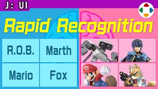
速览
他担任导演的企划，多半会给菜单做色彩分区。《大乱斗 特别版》的顶层画面分成几种颜色：「大乱斗」是红系，进入菜单后之后的菜单都是以红为基调的色调；「命魂」是绿系，同样由绿支配。他很早以前就这样做了，可以看看。菜单的色彩分区不一定都是好事：颜色涂得满满的，有时会让人觉得是面向低龄的东西。他的企划认为有好处才这样做，但每个游戏有合适的调性（Tone & Manner），配合氛围自由设定就好。但无论什么游戏都想推荐的是：同一画面不要把颜色混杂在一起——依设计好坏和方向而定，但容易显得乱糟糟。其实《大乱斗 3DS/Wii U》的菜单中有大幅的角色画，也就是说颜色混在一起，但应该不太在意吧。倒不如说角色等出现在前面，玩一阵后能得到图像被刷进记忆的效果：这有个好处——找图比找字压倒性地快，能直觉处理。无论什么，看图和颜色比读字信息量更多：与左脑式地读字后才理解相比，右脑式地凭图像理解更好。再三强调：即便如此，菜单应该优先游戏的调性。他是因为合自己的企划才这样做的，每个游戏都有自己的正解。
1. 按颜色区分菜单 0:03
他担任导演的企划，多半会给菜单做色彩分区。看看《大乱斗 特别版》：
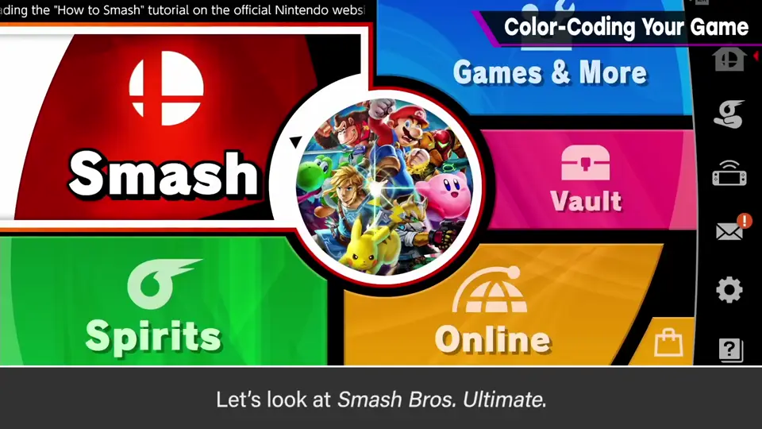
顶层画面分成几种颜色：「大乱斗」是红系，进入后之后的菜单都以红为基调。
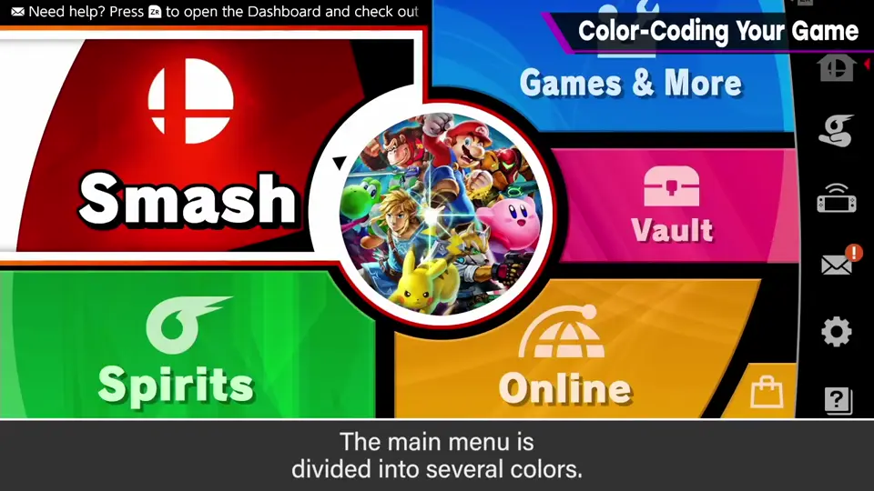
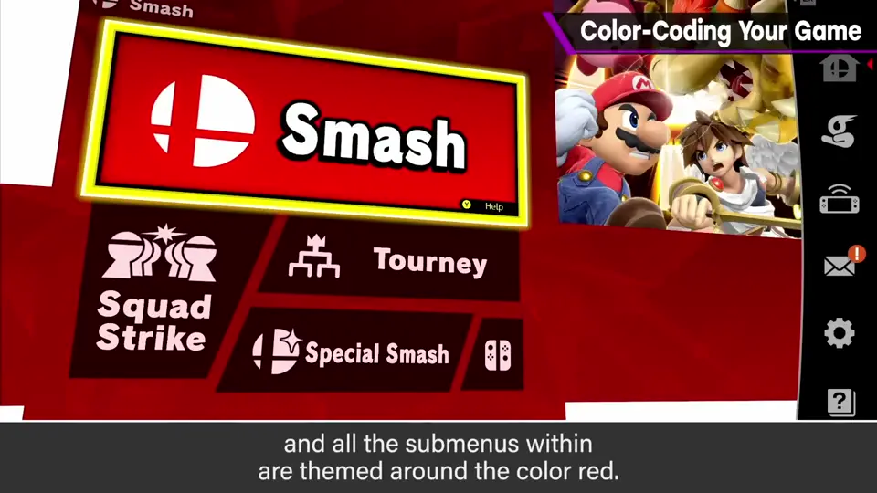
「命魂」是绿系，同样由绿支配。
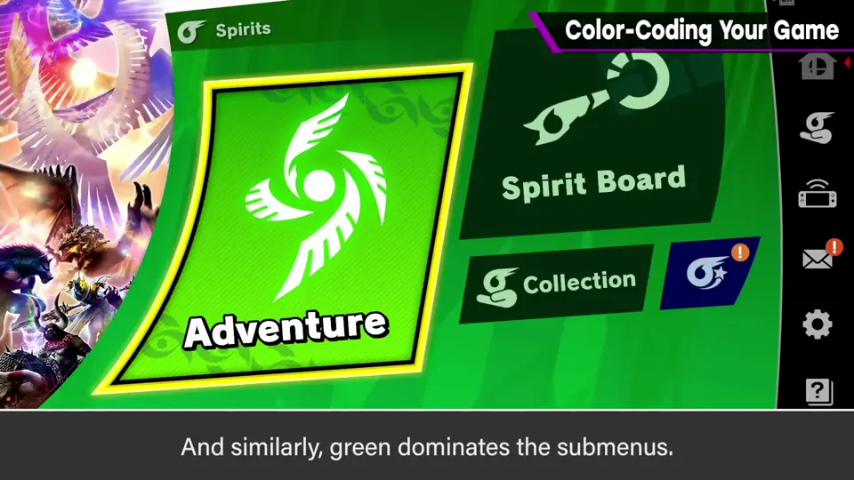
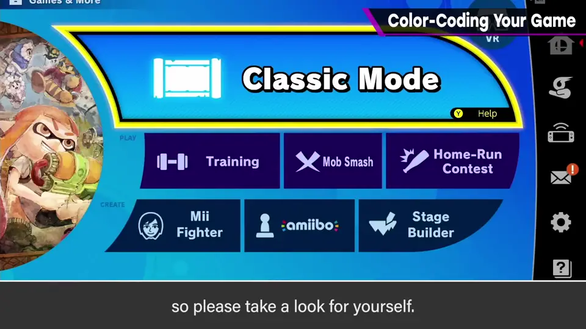
他很早以前就这样做了，可以看看。
2. 未必总是好事 0:37
菜单的色彩分区不一定都是好事：颜色涂得满满的，有时会让人觉得是面向低龄的东西。
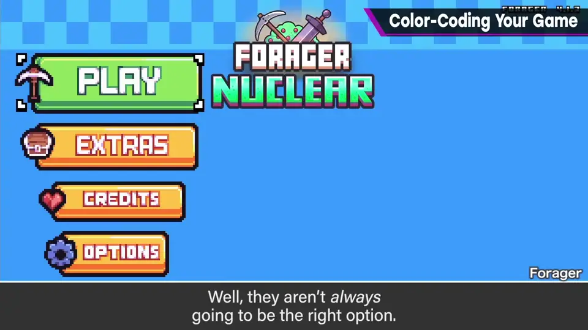
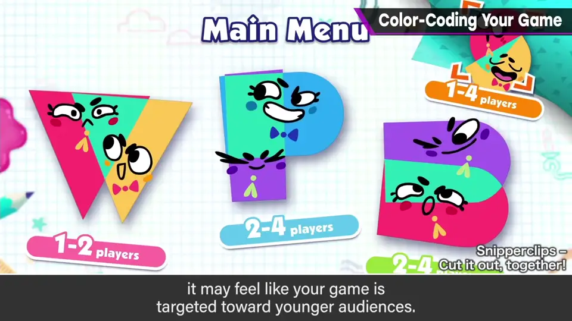
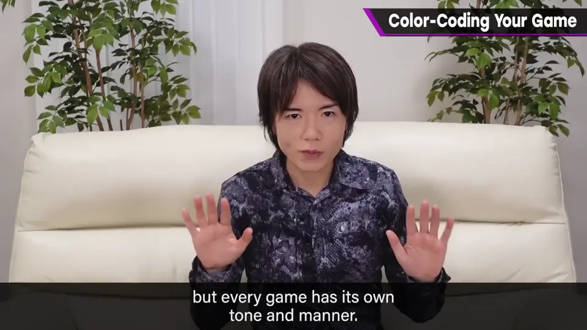
3. 不要混杂颜色 1:04
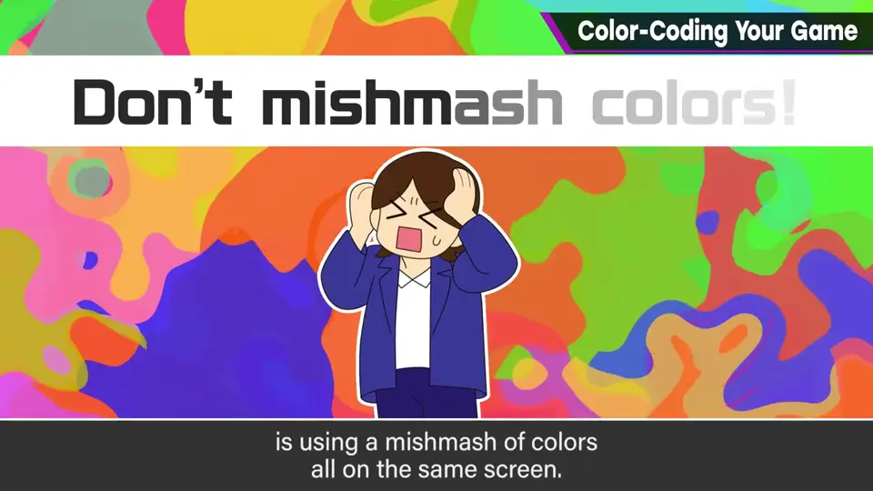
依设计好坏和方向而定，但容易显得乱糟糟。
4. 角色画的例外 1:19
其实《大乱斗 3DS/Wii U》的菜单中有大幅的角色画，也就是说颜色混在一起，但应该不太在意吧。
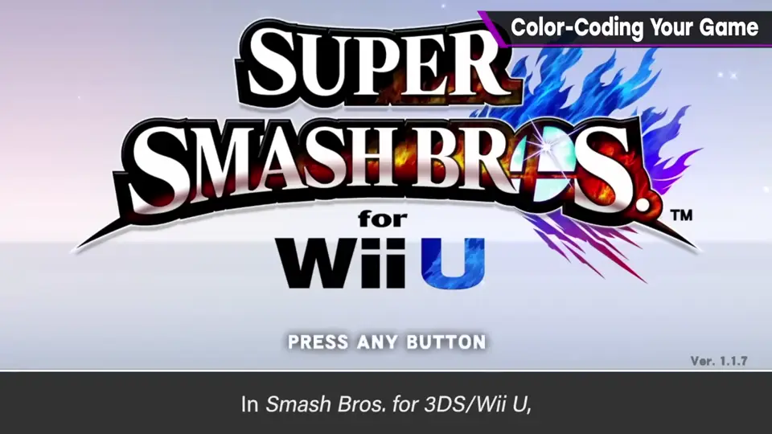
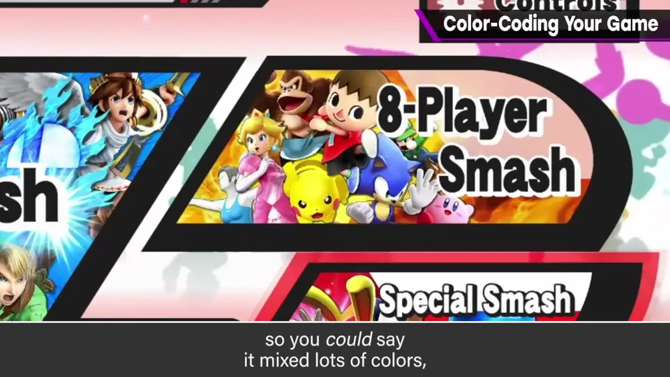
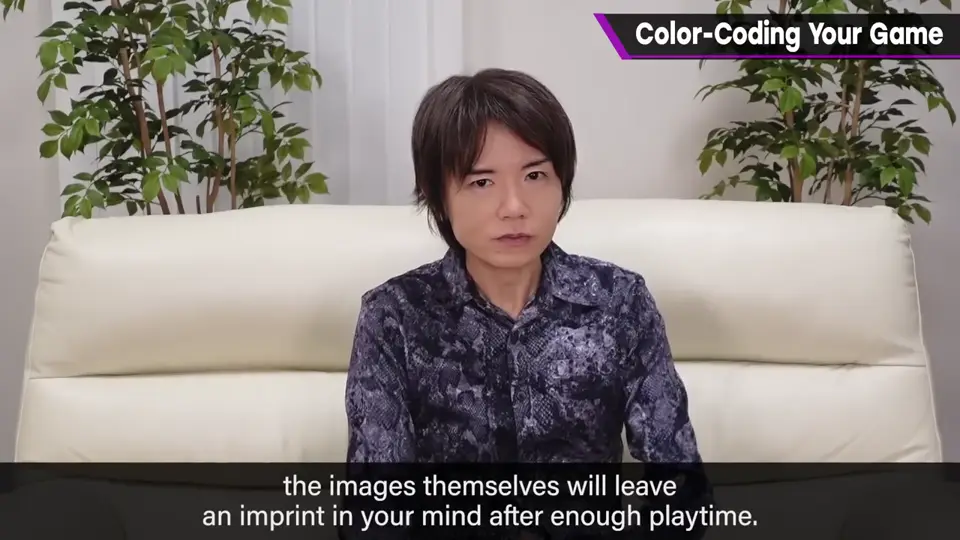
倒不如说角色出现在前面，玩一阵后能得到图像被刷进记忆的效果。
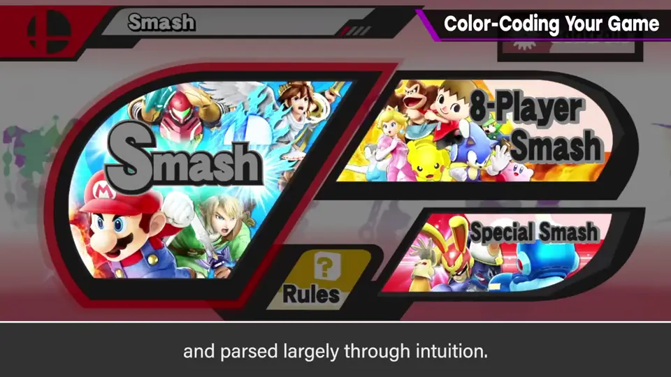
5. 右脑与左脑 1:45
无论什么，看图和颜色比读字信息量更多：与左脑式地读字后才理解相比，右脑式地凭图像理解更好。
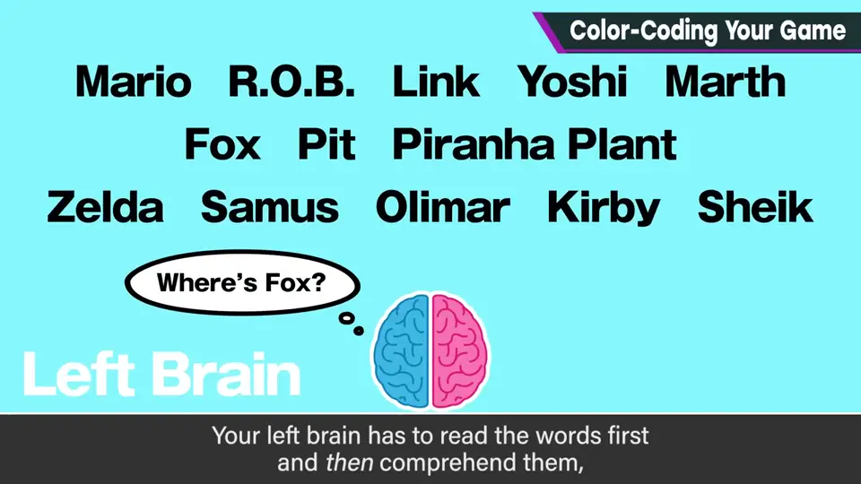
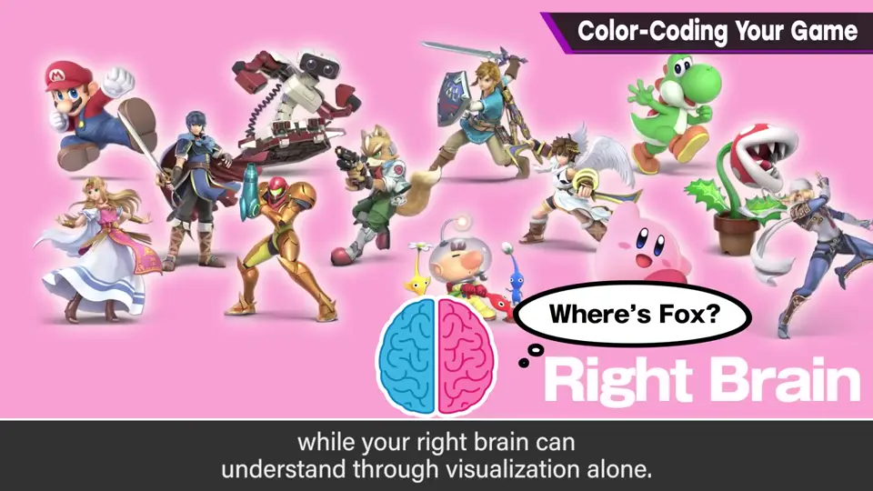
6. 优先游戏调性 2:04
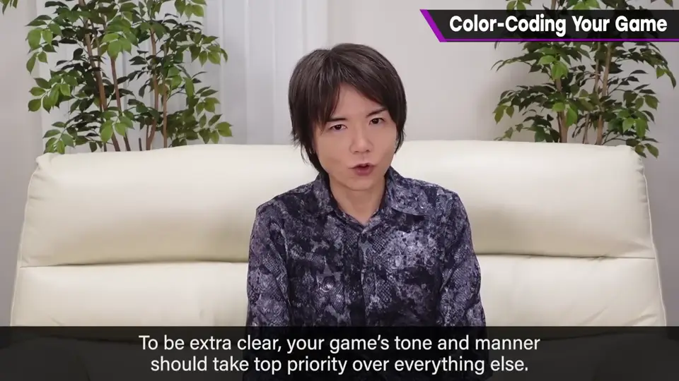
自测题
1. 《特别版》的菜单怎么分色？
「大乱斗」以红为基调，「命魂」以绿为基调，子菜单沿用。 0:25
2. 菜单色彩分区有什么风险？
涂满颜色可能显得面向低龄；要看游戏调性。 0:45
3. 为什么菜单中的大幅角色画反而有利？
图像会被刷进记忆，找图比读字快得多、更直觉。 1:40